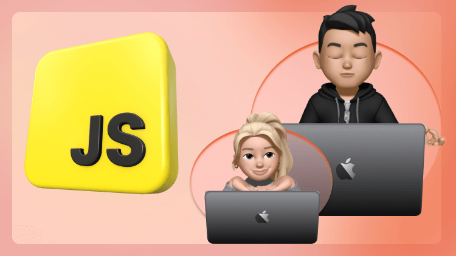

Описание курса
JavaScript... Как много разговоров о нём сегодня. Но что это за "зверь" такой, и как его укротить? Будем честны, это удаётся не каждому. И главная причина, как мне кажется, заключается в неправильном старте. Начальный энтузиазм быстро угасает после просмотра первых видео. В какой-то момент начинаешь "плыть" вместе с мечтами освоить этот язык программирования.
Но ведь существуют люди, которые знают его и знают хорошо. Значит, есть способ его покорить.
Имея 15-летний опыт обучения, я выработал свой подход к бесстрессовому изучению чего-либо:
- Никакой спешки
- Много практики
- Повторение - мать учения
Как же мы будем применять эти методы в нашем курсе? Давайте рассмотрим основные принципы.
1. Теорию разбавляем практикой
После 2-3 лекций нас, как правило, будет ждать практическое занятие с повторным объяснением того, что мы изучили, но уже под другим углом. При этом практику я решил построить интересным способом: в браузере мы будем создавать разные приложения, например игры, квесты — в общем, многое такое, что позволит гордиться собой и похвастаться перед другими. И, конечно же, будем создавать тот функционал, который встречается на современных сайтах.
Кроме этого, при изучении сложных тем практические занятия будут ещё чаще. А в ряде случаев — представлены и в самих лекциях.
2. Практики мало не бывает
Все мы родом из детства, когда нужно было быстро "закрыть" тему в школе и наслаждаться жизнью. И этот опыт часто мешает в изучении чего-то нового во взрослой жизни, но нам нужно как-то это исправлять. Поэтому мы не будем ограничиваться только теорией и практикой на уроках. Я с радостью предоставлю вам доступ к моему сайту, где вас ждёт много тестов, челленджей и тренажёров с задачами.
Также для каждого раздела я подготовил дополнительные видео с моего YouTube-канала Vitaliy html. В том числе там будут видео, которые никогда ещё не публиковались и подготовлены эксклюзивно для данного курса.
3. Планку поднимаем постепенно
Все практические задания построены таким образом, что, кроме нового материала, там также будет включён ранее изученный материал. Знания должны закрепиться в долгосрочной памяти.
А для того чтобы этот процесс был максимально безболезненным, мы будем укладывать полученные знания слой за слоем в спокойном и неспешном темпе.
С программой курса можно ознакомиться в этой статье
4. JavaScript прекрасен
Обучение — это не лёгкая прогулка, здесь нужно серьёзно поработать. Но когда любишь что-то, любые сложности переносятся намного легче.
Поэтому моя задача — не просто познакомить вас с основами JavaScript, но и привить любовь к этому прекрасному языку программирования, чтобы вы с удовольствием продолжили его изучение на более высоком уровне.